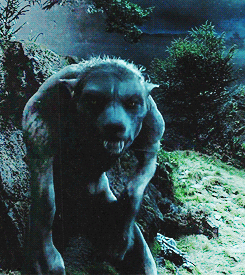
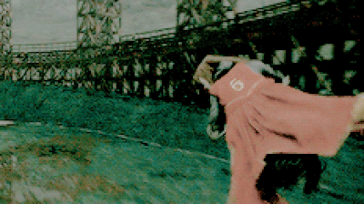

Arthur Weasley, director del Departamento Contra el Uso Incorrecto de los Objetos Muggles, ha ganado el gran premio anual Galleon Draw que entrega el diario El Profeta El señor Weasley, radiante de alegría, declaró a El Profeta: «Gastaremos el dinero en unas vacaciones estivales en Egipto, donde trabaja Bill, nuestro hijo mayor, deshaciendo hechizos para el banco mágico Gringotts.»La família Weasley pasará un mes en Egipto, y regresará para el comienzo del nuevo curso escolar de Hogwarts, donde estudian actualmente cinco hijos del matrimonio Weasley.. 
El Ministerio de Magia confirmó ayer que Sirius Black, tal vez el más malvado recluso que haya albergado la fortaleza de Azkaban, aún no ha sido capturado.Estamos haciendo todo lo que está en nuestra mano para volver a apresarlo, y rogamos a la comunidad mágica que mantenga la calma», ha declarado esta misma mañana el ministro de Magia Cornelius Fudge. Fudge ha sido criticado por miembros de la Federación Internacional de Brujos por haber informado del problema al Primer Ministro muggle.
No tenemos noticia de ningún estudio acerca de la compatibilidad de dukuwaqas y selmas, así que el Consejo de Magia no se hace responsable de las desafortunadas consecuencias de haber acomodado a ambas criaturas en el mismo recinto."Las dukuwaqas viven en aguas marinas cálidas, mientras que el hábitat de las selmas son los lagos helados. Las primeras son seres que cambian de forma y que pueden pasar de pez a humano, mientras que las segundas son serpientes que se alimentan de carne humana y pescado. Hasta un billywig podría anticipar la sangría que puede darse si se junta a ambas criaturas en agua tibia y salobre. 
El buscador de Fiyi Joseph Snuka intenta justificar sin éxito la brutal derrota de su equipo por 400 a 160 frente al favorito de estos mundiales, Nigeria.Durante la primera parte del partido, los golpeadores fiyianos Quintia Qarase y Narinder Singh no jugaron con la ferocidad que sí desplegaron sus homólogos nigerianos Aliko Okoye y Mercy Ojukwu Las bludgers hicieron mucho daño a los cazadores del equipo de Fiyi, quienes solo consiguieron marcar un gol en la primera hora del partido, mientras Nigeria marcó cuarenta.
